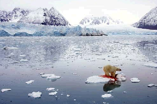
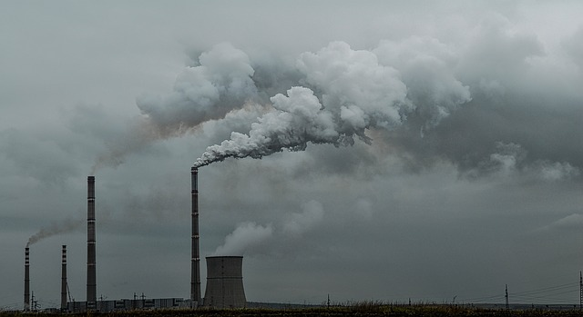
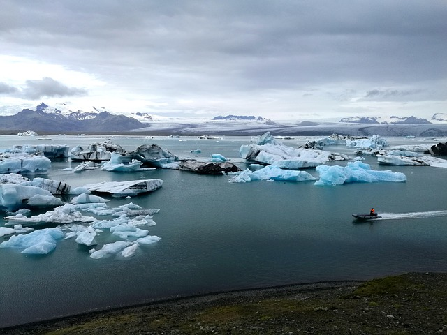
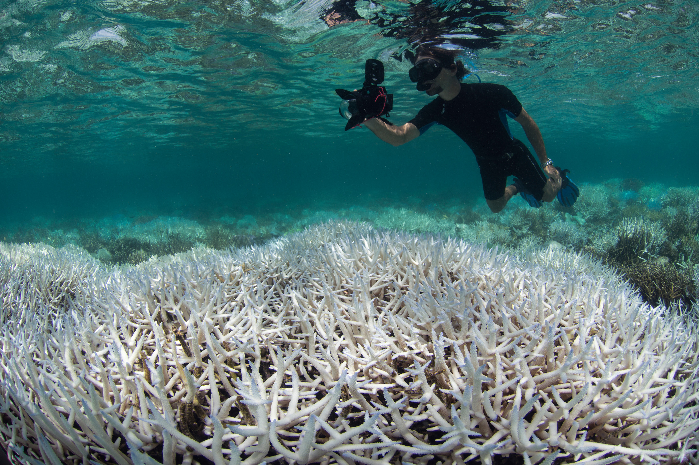
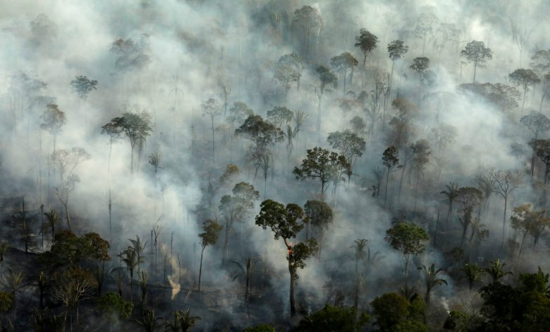
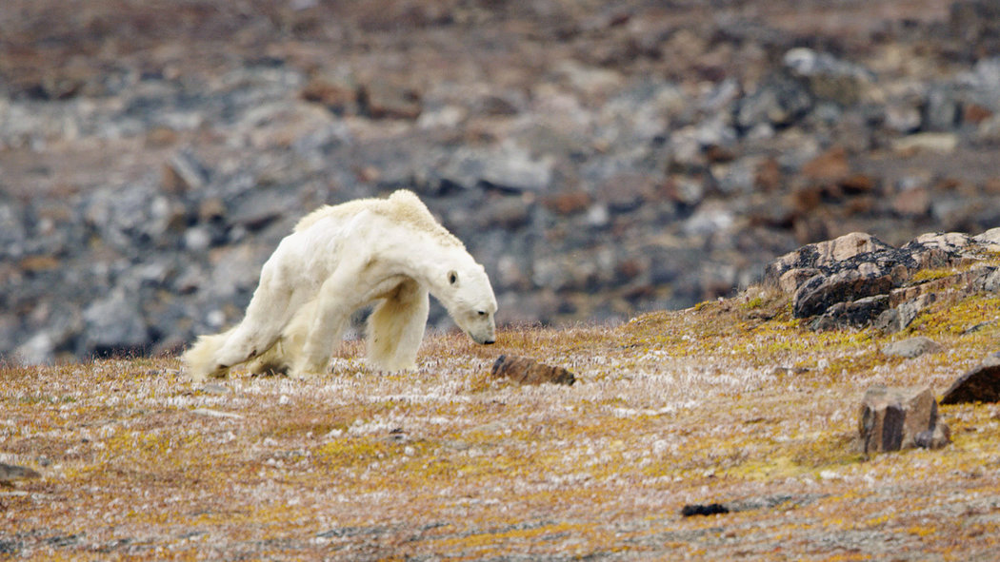

| 溫室效應與氣候變遷 |
溫室效應會牽動地球不正常之氣候變遷，已對地球環境產生可預見之衝擊（氣候變化綱要公約資訊網）： 極地冰原融化，海平面上升，淹沒較低窪之沿海陸地，衝擊低地國及多數國家沿海精華區。 全球氣候變遷，導致不正常暴雨及乾旱現象，衝擊水土資源環境衛生及人類生命等。 沙漠化現象擴大，生態體系改變，衝擊農林漁牧之經濟活動及全球生存環境等。
聯合國「跨政府氣候變遷小組（IPCC）」2007 對 2100 年全球預測， 氣溫將上升攝氏 1.1 - 6.4℃（最有可能的範圍 1.8 - 4.0 ℃）、 海平面則上升 18 - 59 公分如兩極冰層快速融解，會再提高 10 - 20 公分）。 乾旱、颱風等天災的強度都將增強，北極冰層則在夏天可能完全融解。
 |
 |  |
 |  |  |  |  |